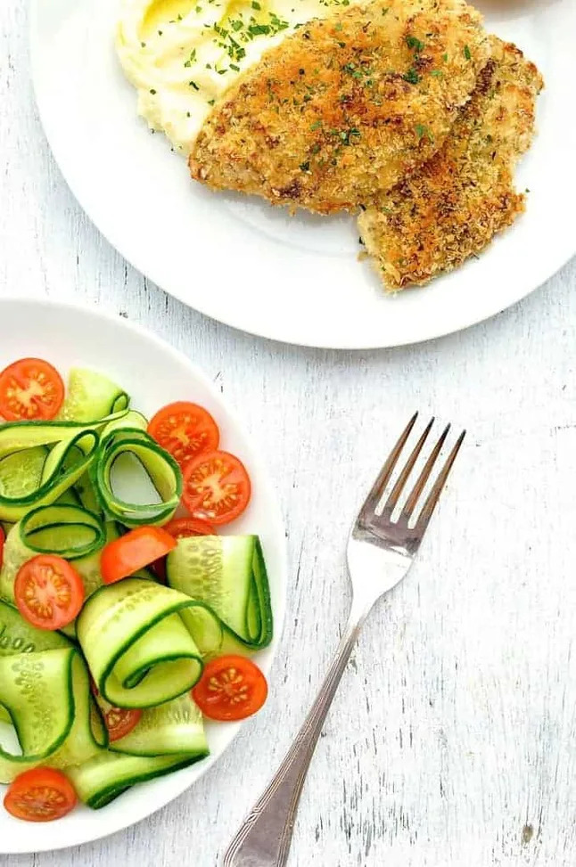

Crunchy Chicken, Potato and Salad
Breakfast | Lunch | Afternoon Snack || Drinks
Description 
It's been a while since I shared a 15 minute Meal! So I thought I'd share one of my favourites. This is a classic midweek meal for me. I will often do variations of this, using fish and making the mash using other vegetables like peas and parsnip

Ingredients Image
- Chicken Breast
- Panko Breadcrumbs
- Mayonnaise
- Parmesan Cheese
Steps
- Chicken breast minute steaks - these are just thin slices of chicken breast. They are great for fast meals because they cook so quickly (this takes 8 minutes under the grill/broiler) and they are particularly suited for this recipe because the surface is flat so you can crumb the chicken more easily. They cost a little bit more(about $2/kg more which is $1/lb). Or you can just slice a chicken breast horizontally yourself;
- Mayonnaise for flavour, make the panko stick and the crumb golden brown - mayonnaise is such a great shortcut trick. Not only does it provide the flavour for the chicken but it's also perfect for making the panko stick to the chicken. You will be amazed how well it works. And to top it off, it makes the crumb comes out a beautiful golden brown because of the oil in the mayonnaise (rather than drizzling with oil. Oil spray does not work because the force of the spray blows the crumb off!);
- Grilling/broiling the chicken in a fry pan - you will truly be amazed how well this works! The crumb comes out golden (as you can see in the picture) and because this is made using panko instead of breadcrumbs, it is a really thick and crunchy crumb; and
- Microwave Mashed Potato - I use a couple of shortcuts in this. Firstly, I microwave the potatoes which takes about 5 minutes - much faster than boiling. Secondly, you don't need to peel and cut the potatoes, just microwave the potatoes whole. Then cut them in half and scoop out the flesh. Once you add milk and butter (optional), I bet no one can tell it whether the potatoes were boiled or microwaved!
Enjoy your delicious dinner - Sam Altman